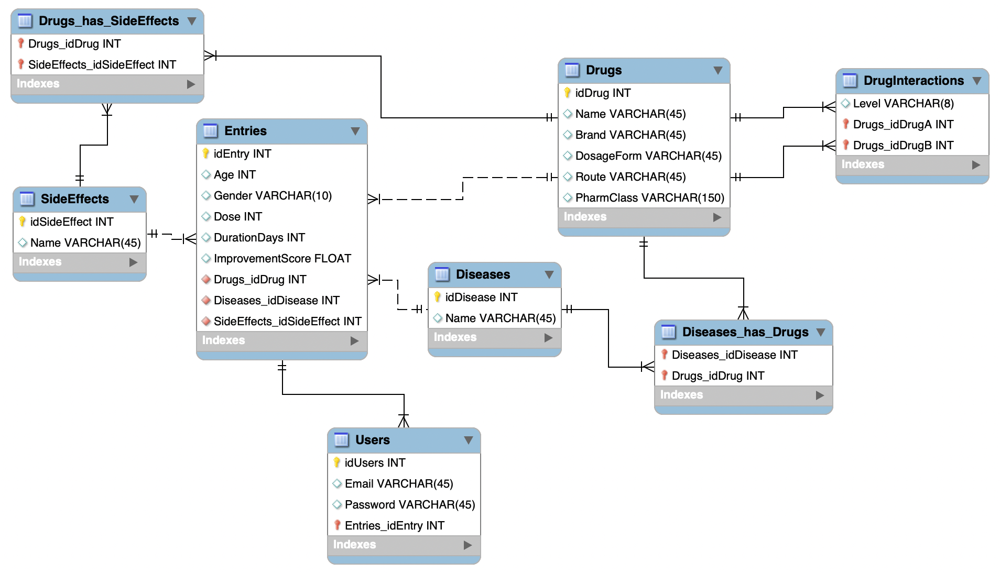

A normalised relational SQL database for tracking patients, drugs, diseases, drug–drug interactions and side effects; designed from scratch for the subject Databases & Web Development at UPF-UB.
This project was developed for the subject Databases & Web Development during my Master's at UPF-UB. The task was to design and implement a fully normalised relational database satisfying a set of domain requirements, then expose it through a simple web interface built with Flask.
The domain is pharmaceutical: the database stores information about drugs, the diseases they treat, the side effects they can cause, how drugs interact with each other and which patients are taking what. The design prioritises data integrity, avoiding redundancy and making complex queries (like "find all drugs that interact with drug X at a severe level") efficient and straightforward.
The diagram below shows the full ER model. Each box is a table, each line a relationship, and the crow's-foot notation indicates cardinality.

The schema centres on the Entries table, which represents a single patient treatment record. From there, every other entity is reachable. Here is a breakdown of the key design decisions:
A drug can treat multiple diseases and a disease can be treated by multiple drugs. This is resolved through the Diseases_has_Drugs junction table, which holds the two foreign keys and nothing else — a clean bridge table.
A drug can cause many side effects and the same side effect can be caused by many drugs. The junction table Drugs_has_SideEffects bridges them, keeping the SideEffects table a clean lookup catalogue.
Interactions are a many-to-many self-join on Drugs. The DrugInteractions table stores pairs (idDrugA, idDrugB) plus the severity Level, avoiding duplication of drug data.
Each registered user owns exactly one patient entry. This enforces a clean separation between authentication credentials (email, hashed password) stored in Users and the clinical data stored in Entries.
This project taught me how to think in sets rather than in objects, the core mindset shift required for relational database design. Identifying the right cardinalities, knowing when to introduce a junction table, and understanding which attributes belong to which entity (rather than duplicating them) are skills that took real iteration to get right.
Writing the Flask layer on top also showed me how the schema design directly impacts the complexity of the application code: a well-normalised schema makes JOIN queries clean and predictable, while a poorly designed one leads to messy, fragile queries scattered throughout the codebase.